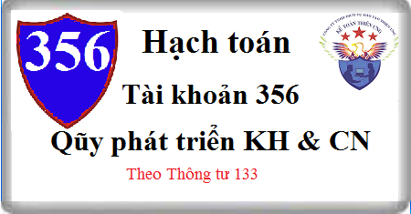

Hướng dẫn cách hạch toán Tài khoản 356 theo thông tư 133, cách hạch toán trích lập Quỹ phát triển khoa học công nghệ, mua TSCĐ bằng Qũy phát triển khoa học công nghệ
1. Nguyên tắc kế toán Tài khoản 356 - Quỹ phát triển khoa học và công nghệ
a) Tài khoản này dùng để phản ánh số hiện có, tình hình tăng giảm Quỹ phát triển khoa học và công nghệ (PTKH&CN) của doanh nghiệp. Quỹ PTKH&CN của doanh nghiệp chỉ được sử dụng cho đầu tư khoa học, công nghệ tại Việt Nam.
b) Quỹ PTKH&CN được hạch toán vào chi phí quản lý doanh nghiệp để xác định kết quả kinh doanh trong kỳ. Việc trích lập và sử dụng Quỹ PTKH&CN của doanh nghiệp phải tuân thủ theo các quy định của pháp luật.
c) Trường hợp doanh nghiệp sử dụng Quỹ PTKH&CN để tài trợ cho việc nghiên cứu, sản xuất thử nghiệm, số tiền thu được khi bán sản phẩm sản xuất thử được bù trừ với chi phí sản xuất thử theo nguyên tắc:
- Phần chênh lệch giữa số tiền thu từ bán sản phẩm sản xuất thử cao hơn chi phí sản xuất thử được ghi tăng Quỹ PTKH&CN;
- Phần chênh lệch giữa số tiền thu từ bán sản phẩm sản xuất thử thấp hơn chi phí sản xuất thử được ghi giảm Quỹ PTKH&CN.
d) Định kỳ, doanh nghiệp lập Báo cáo về mức trích, sử dụng, quyết toán Quỹ PTKH&CN và nộp cơ quan có thẩm quyền theo quy định của pháp luật.
2. Kết cấu và nội dung Tài khoản 356 - Quỹ phát triển khoa học và công nghệ
Bên Nợ:
- Các khoản chi tiêu từ Quỹ phát triển khoa học và công nghệ;
- Giảm Quỹ phát triển khoa học và công nghệ đã hình thành tài sản cố định (TSCĐ) khi tính hao mòn TSCĐ; giá trị còn lại của TSCĐ khi nhượng bán, thanh lý; chi phí thanh lý, nhượng bán TSCĐ hình thành từ Quỹ phát triển khoa học và công nghệ;
- Giảm Quỹ phát triển khoa học và công nghệ đã hình thành TSCĐ khi TSCĐ hình thành từ Quỹ phát triển khoa học và công nghệ chuyển sang phục vụ mục đích sản xuất, kinh doanh.
Bên Có:
- Trích lập Quỹ phát triển khoa học và công nghệ vào chi phí quản lý doanh nghiệp;
- Số thu từ việc thanh lý, nhượng bán TSCĐ hình thành từ Quỹ phát triển khoa học và công nghệ đã hình thành TSCĐ.
Số dư bên Có: Số quỹ phát triển khoa học và công nghệ hiện còn của doanh nghiệp.
Tài khoản 356 - Quỹ phát triển khoa học và công nghệ có 2 tài khoản cấp 2:
- Tài khoản 3561 - Quỹ phát triển khoa học và công nghệ: Phản ánh số hiện có và tình hình trích lập, chi tiêu quỹ phát triển khoa học và công nghệ;
- Tài khoản 3562 - Quỹ phát triển khoa học và công nghệ đã hình thành TSCĐ: Phản ánh số hiện có, tình hình tăng, giảm quỹ phát triển khoa học và công nghệ đã hình thành TSCĐ (Quỹ phát triển khoa học và công nghệ đã hình thành TSCĐ).
3. Cách hạch toán Quỹ phát triển khoa học công nghệ Tài khoản 356
a) Trong năm khi trích lập quỹ phát triển khoa học và công nghệ, ghi:
Nợ TK 642 - Chi phí quản lý kinh doanh (6422)
Có TK 356 - Quỹ phát triển khoa học và công nghệ.
b) Khi chi tiêu Quỹ PTKH&CN phục vụ cho mục đích nghiên cứu, phát triển khoa học và công nghệ của doanh nghiệp, ghi:
Nợ TK 356 - Quỹ phát triển khoa học và công nghệ
Nợ TK 133 - Thuế GTGT được khấu trừ (nếu có)
Có các Tài khoản 111, 112, 331...
c) Khi sử dụng Quỹ PTKH&CN để trang trải cho hoạt động sản xuất thử sản phẩm:
- Kế toán tập hợp chi phí sản xuất thử, ghi:
Nợ TK 154 - Chi phí sản xuất, kinh doanh dở dang
Nợ TK 133 - Thuế GTGT được khấu trừ
Có các TK 111, 112, 152, 331...
- Khi bán sản phẩm sản xuất thử, ghi:
Nợ TK 111, 112, 131
Có TK 154 - Chi phí sản xuất, kinh doanh dở dang
Có TK 333 Thuế và các khoản phải nộp Nhà nước (nếu có)
- Chênh lệch giữa chi phí sản xuất thử và số thu từ bán sản phẩm sản xuất thử được điều chỉnh tăng, giảm Quỹ, ghi:
+ Trường hợp số thu từ việc bán sản phẩm sản xuất thử cao hơn chi phí sản xuất thử, kế toán ghi tăng Quỹ PTKH&CN, ghi:
Nợ TK 154 - Chi phí sản xuất, kinh doanh dở dang
Có TK 356 - Quỹ Phát triển khoa học và công nghệ
+ Trường hợp số thu từ việc bán sản phẩm sản xuất thử nhỏ hơn chi phí sản xuất thử, kế toán ghi ngược lại bút toán trên.
d) Khi đầu tư, mua sắm TSCĐ hoàn thành bằng quỹ phát triển khoa học và công nghệ sử dụng cho mục đích nghiên cứu, phát triển khoa học và công nghệ:
- Khi đầu tư, mua sắm TSCĐ, ghi:
Nợ các TK 211 Tài sản cố định (nguyên giá)
Nợ TK 133 - Thuế GTGT được khấu trừ (nếu có)
Có các TK 111, 112, 331...
Đồng thời, ghi:
Nợ TK 3561 - Quỹ phát triển khoa học và công nghệ
Có TK 3562 - Quỹ PTKH&CN đã hình thành TSCĐ.
- Cuối kỳ kế toán, tính hao mòn TSCĐ đầu tư, mua sắm bằng Quỹ phát triển khoa học và công nghệ sử dụng cho mục đích nghiên cứu, phát triển khoa học và công nghệ, ghi:
Nợ TK 3562 - Quỹ PTKH&CN đã hình thành TSCĐ
Có TK 214 Hao mòn TSCĐ.
- Khi thanh lý, nhượng bán TSCĐ đầu tư, mua sắm bằng quỹ phát triển khoa học và công nghệ:
+ Ghi giảm TSCĐ thanh lý, nhượng bán:
Nợ TK 3562 - Quỹ PTKH&CN đã hình thành TSCĐ (giá trị còn lại)
Nợ TK 214 - Hao mòn TSCĐ (giá trị hao mòn)
Có các TK 211 – Tài sản cố định
+ Ghi nhận số tiền thu từ việc thanh lý, nhượng bán TSCĐ:
Nợ các TK 111, 112, 131
Có TK 3561 - Quỹ phát triển khoa học và công nghệ
Có TK 3331 - Thuế GTGT phải nộp (33311).
+ Ghi nhận chi phí phát sinh liên quan trực tiếp đến việc thanh lý, nhượng bán TSCĐ:
Nợ TK 3561 - Quỹ phát triển khoa học và công nghệ
Nợ TK 133 - Thuế GTGT được khấu trừ (nếu có)
Có các TK 111, 112, 331..
- Khi kết thúc quá trình nghiên cứu, phát triển khoa học công nghệ, chuyển TSCĐ hình thành từ Quỹ phát triển khoa học và công nghệ sang phục vụ cho mục đích sản xuất, kinh doanh, kế toán ghi:
Nợ TK 3562 - Quỹ PTKH&CN đã hình thành TSCĐ (phần giá trị còn lại của TSCĐ hình thành từ quỹ chưa khấu hao hết)
Có TK 711 - Thu nhập khác.
Kể từ thời điểm TSCĐ chuyển sang phục vụ mục đích sản xuất, kinh doanh, hao mòn của TSCĐ được tính vào chi phí sản xuất, kinh doanh theo quy định của chế độ kế toán doanh nghiệp hiện hành.
-------------------------------------
Kế toán Diệu Tâm xin chúc bạn làm tốt công việc kế toán
